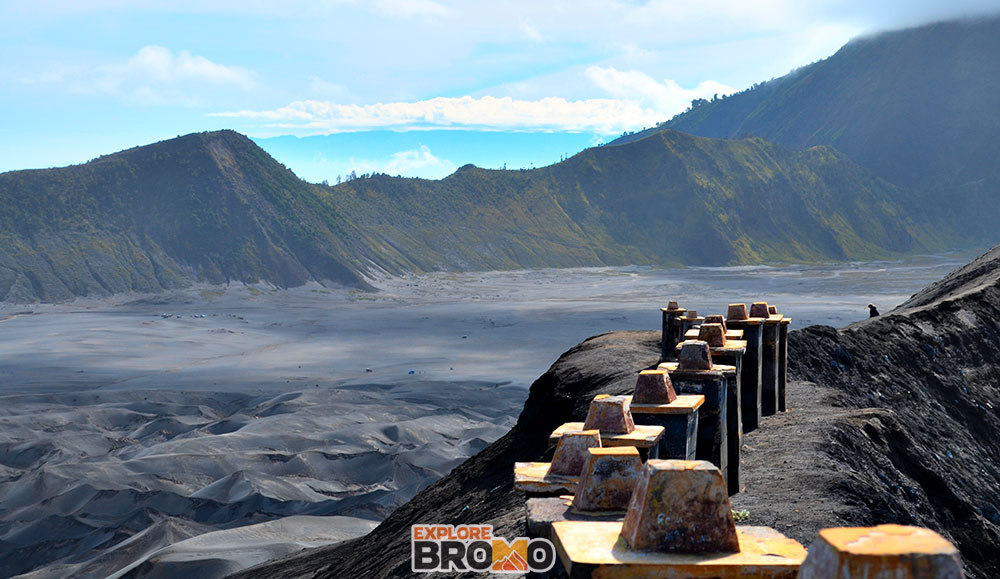
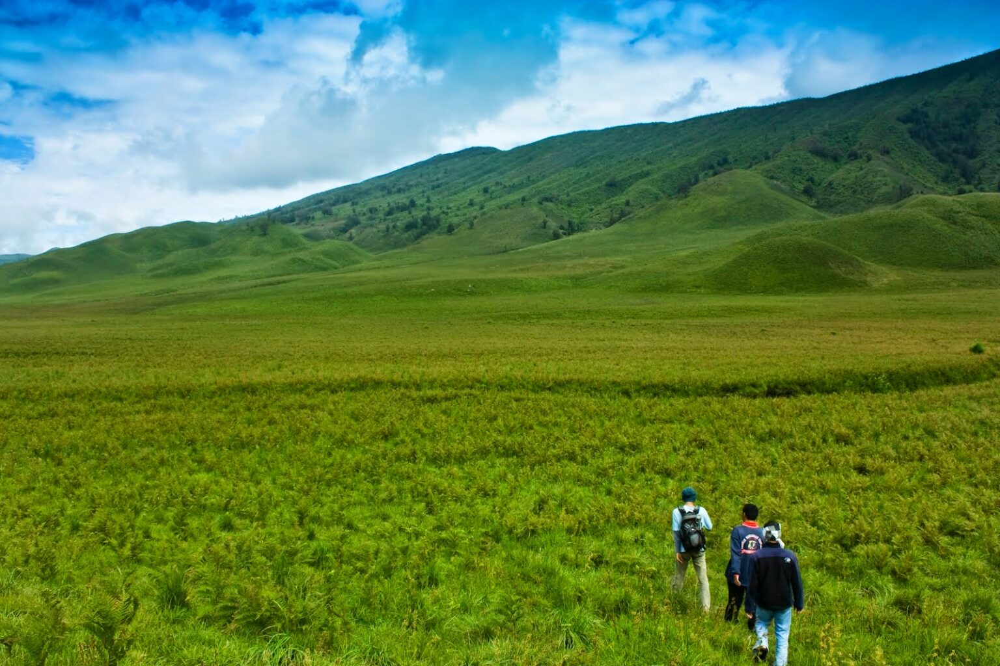
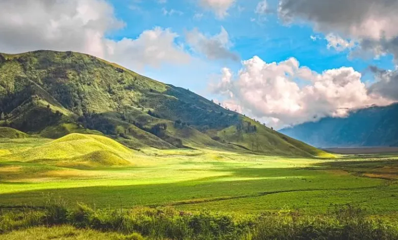

Deskripsi
Gunung Bromo atau dalam bahasa Tengger dieja "Brama", juga disebut Kaldera Tengger, adalah sebuah gunung berapi aktif di Jawa Timur, Indonesia. Gunung ini memiliki ketinggian 2.329 meter di atas permukaan laut dan berada dalam empat wilayah kabupaten, yakni Kabupaten Probolinggo, Kabupaten Pasuruan, Kabupaten Lumajang, dan Kabupaten Malang. Gunung Bromo terkenal sebagai objek wisata utama di Jawa Timur. Sebagai sebuah objek wisata, Bromo menjadi menarik karena statusnya sebagai gunung berapi yang masih aktif. Gunung Bromo termasuk dalam kawasan Taman Nasional Bromo Tengger Semeru.
Nama Bromo berasal dari nama dewa utama dalam agama Hindu, Brahma.
Bentuk tubuh Gunung Bromo bertautan antara lembah dan ngarai dengan kaldera atau lautan pasir seluas sekitar 10 kilometer persegi, Ia mempunyai sebuah kawah dengan garis tengah ± 800 meter (utara-selatan) dan ± 600 meter (timur-barat). Sedangkan daerah bahayanya berupa lingkaran dengan jari-jari 4 km dari pusat kawah Bromo.
Sejarah Letusan
Selama abad 20 dan abad 21, Gunung Bromo telah meletus sebanyak beberapa kali, dengan interval waktu yang teratur, yaitu 30 tahun. Letusan terbesar terjadi 1974, sedangkan letusan terakhir terjadi pada 19 Juli 2019.
Geografis
Posisi Lokasi Dan Letak Gunung Bromo tepat berada di antara wilayah administrasi Kabupaten Malang dan Lumajang, dengan posisi geografis antara 8°06′ LS dan 120°55′ BT. Namun dengan Letak Gunung Bromo ini oleh pemerintah dijadikan sebagai perbatasan 4 wilayah kabupaten di Jawa Timur.
Bagaimana Cara Ke Gunung Bromo ?
Anda berasal dari luar wilayah Jawa Timur dan ingin pergi ke bromo ? Kota yang harus kalian datangi adalah Kota Malang atau Kota Surabaya. Anda bisa menuju 2 kota besar di Jawa Timur itu melalui bandara, stasiun, terminal dll. Setelah itu dengan jarak tempuh berkendara dari surabaya atau malang menuju bromo sekitar 3 jam. Gunung Bromo terletak di 4 wilayah kabupaten Pasuruan, Malang, Probolinggo dan Lumajang anda bisa memilih pintu masuk mana yang terdekat. Pilihan rute ke bromo yang paling diminati adalah melalui kota Probolinggo karena aksesnya cukup mudah dan bisa dilewati mobil hingga bus pariwisata.
Wisata
Objek wisata Bromo selalu menarik minat para pelancong baik dari dalam maupun luar negeri. Bromo menawarkan eksotisme yang tidak bisa didapat dari tempat lain di Indonesia. Setiap hari, ratusan wisatawan lokal dan mancanegara berbondong-bondong datang untuk menikmati kemegahan alam Bromo.
Ini karena wisata Bromo menawarkan pemandangan alam yang asri, original, dan menyegarkan jiwa raga. Objek wisata Bromo terdiri dari beragam keindahan alam khas pegunungan. Anda bisa melihat perbukitan yang menghijau dengan rumput savana, mengelilingi lautan pasir yang membentang luas, hingga menikmati sunrise dari puncak gunung yang menakjubkan.
Berikut daftar objek wisata Bromo yang pastinya wajib untuk Anda sambangi saat berkunjung ke sana
Kawah Gunung Bromo

Objek wisata Bromo yang pertama adalah kawah gunungnya. Kawah gunung Bromo adalah destinasi yang wajib dikunjungi. Di sana, Anda bisa melihat secara langsung kecantikan kawah Bromo yang begitu memesona dan alami. Untuk mencapainya kawah gunung Bromo, Anda hanya perlu berjalan kaki sekitar 2 km dari area parkir. Anda juga dapat menyewa dan menaiki kuda untuk menuju kawah gunung ini.
Padang Rumput Savana

Obyek wisata Bromo yang kedua adalah Padang Rumput Savana. Padang rumput savana Bromo terletak di selatan timur gunung. Padang rumput ini terletak pada sebuah lembah hijau yang di kelilingi tebing-tebing menjulang tinggi dan beberapa punggung gunung kecil.
Padang Rumput Savana Bromo yang sangat luas ini sangat menakjubkan dan membuat kaget, karena jalur mencapai savana adalah lautan pasir yang gersang, namun saat memasuki padang rumput Anda akan disuguhi oleh pemandangan yang benar-benar hijau. Terletak di lembah jemplang, akses termudah untuk menuju padang rumput ini adalah dengan menunggangi kendaraan biasa atau sepeda motor via Malang atau Lumajang.
Bukit Teletubbies

Objek wisata Bromo yang keempat adalah Bukit Teletubbies Bromo. Bukit Teletubbies telah menjadi salah satu obyek favorit bagi banyak wisatawan untuk sekadar berjalan-jalan menikmati pemandangan sambil berfoto-foto.
Bukit Teletubbies Bromo benar-benar menawarkan pemandangan cantik gunung Bromo dengan deretan bukit hijau, dan area bukit ini juga terbukti menjadi spot foto terbaik. Bukit Teletubbies dipenuhi dengan rerumputan hijau yang sangat cantik dan terjaga rapi.
Seruni Point

Seruni Point merupakan salah satu tempat yang bisa dikunjungi untuk menikmati indahnya matahari pagi di kawasan Taman Nasional Bromo Tengger Semeru. Puncak Seruni Point yang ada di desa Ngadisari, kecamatan Sukapura, Kabupaten Probolinggo, itu berada dalam satu kawasan dengan Gunung Bromo. Selain dilengkapi dengan menara pandang, Puncak Seruni Point juga dilengkapi dengan 256 anak tangga. Jika melewati tangga itu, layaknya melewati anak tangga di tembok Cina.
Selain itu, juga ada empat pilar Tugu Brawijaya yang menjadi titik utama pesona The Great Wall of Seruni Point peak. Selain cocok digunakan foto - foto selfie, tempat ini layak sebagai areal mengenang kejayaan kerajaan Majapahit sebab warga tengger dikabarkan masyarakat kerajaan Majapahit yang tersisa.